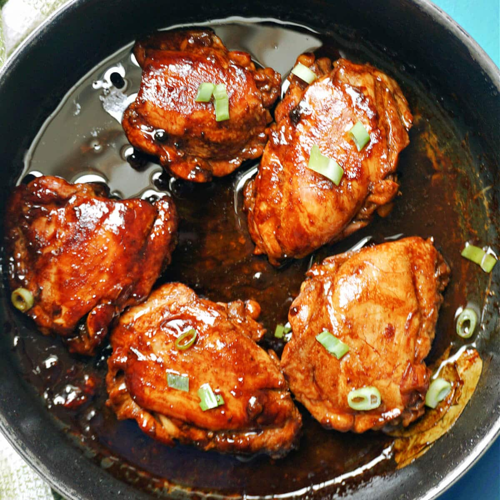

Chicken Adoba

Description
Chicken Adobo is a type of Filipino chicken stew. Chicken pieces are marinated in soy sauce and spices, pan-fried, and stewed until tender.
The dish gained popularity because of its delicious taste and ease in preparation.
Ingredients
- 4 lbs. skin-on, bone-in chicken
- 1/2 cup soy sauce
- 1/2 cup apple cider vinegar
- 2 Tbsp vegetable oil
- 2 Tbsp honey
- 2 whole bay leaves
- 1 Tbsp minced garlic (about 2 cloves)
- 1 Tbsp black peppercorns
Steps
- Arrange the chicken pieces in a large pot in one layer. Remove the skin if desired.
- Combine the rest of the ingredients (soy sauce, vinegar, honey, oil, garlic, bay leaves, peppercorns) in a bowl and whisk until the honey is dissolved. Partially crush the peppercorns if desired.
Pour the marinade over the chicken. Cover and refrigerate for a few hours or over night.
- When you’re ready to make the chicken, add just enough water so that the liquid comes just up to the top of the chicken (about 1/2 cup). Cover the pot with a lid, place the pot over a high flame, and bring it up to a rolling boil.
When it reaches a boil, reduce the heat to medium/low and let simmer for 30 minutes.
- Preheat your broiler on high. Remove the chicken from the pot and place it on a broiler pan (or a sheet pan with wire cooling racks placed on top). Place the chicken under the broiler until it is brown and crispy on top (5-10 minutes), depending on your broiler).
- While the chicken is broiling, turn pot with the soy/vinegar liquid up to high and bring up to a rapid boil. Allow the liquid to boil heavily until it is reduced in volume by approximately one half. You may need to boil it for 5-10 minutes longer than the chicken is in the oven to get it to this point.
- Use a soft brush to baste a few layers of the reduced soy/vinegar liquid onto the browned chicken. Serve over rice or noodles and spoon more of the reduced liquid over top.